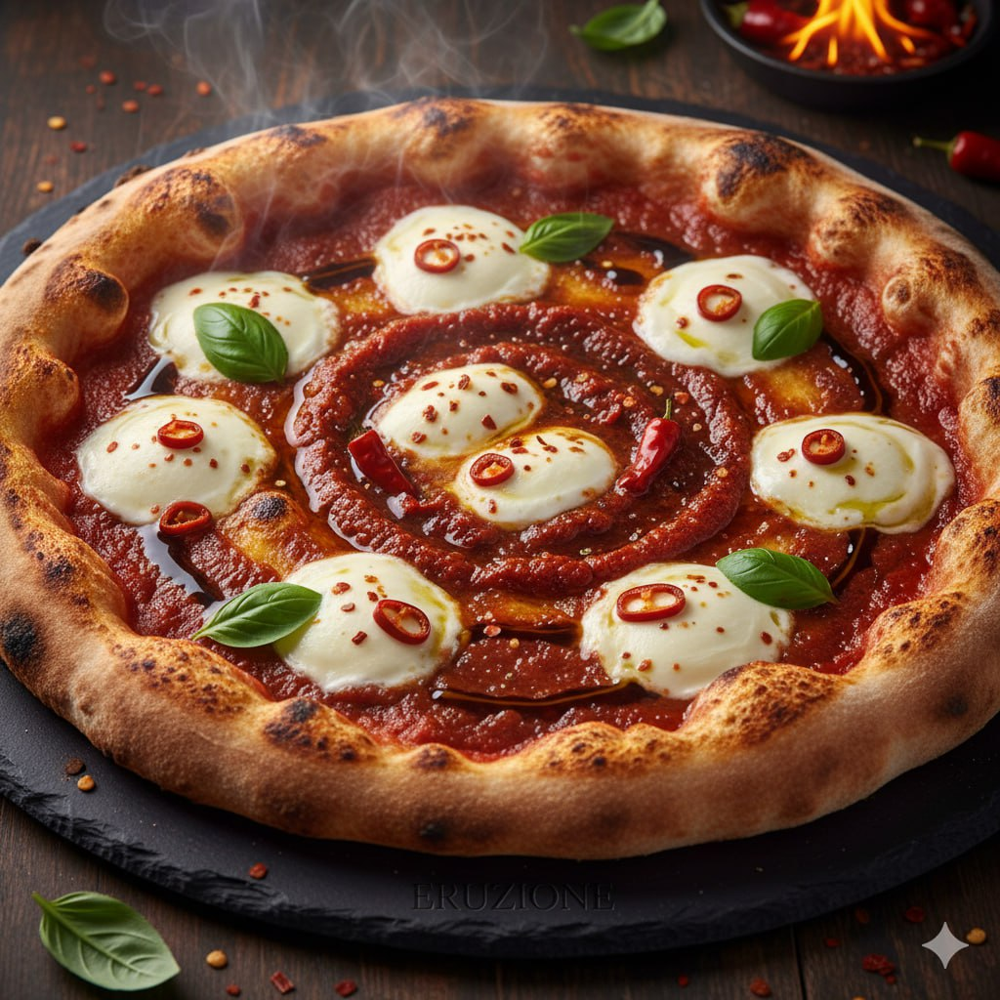
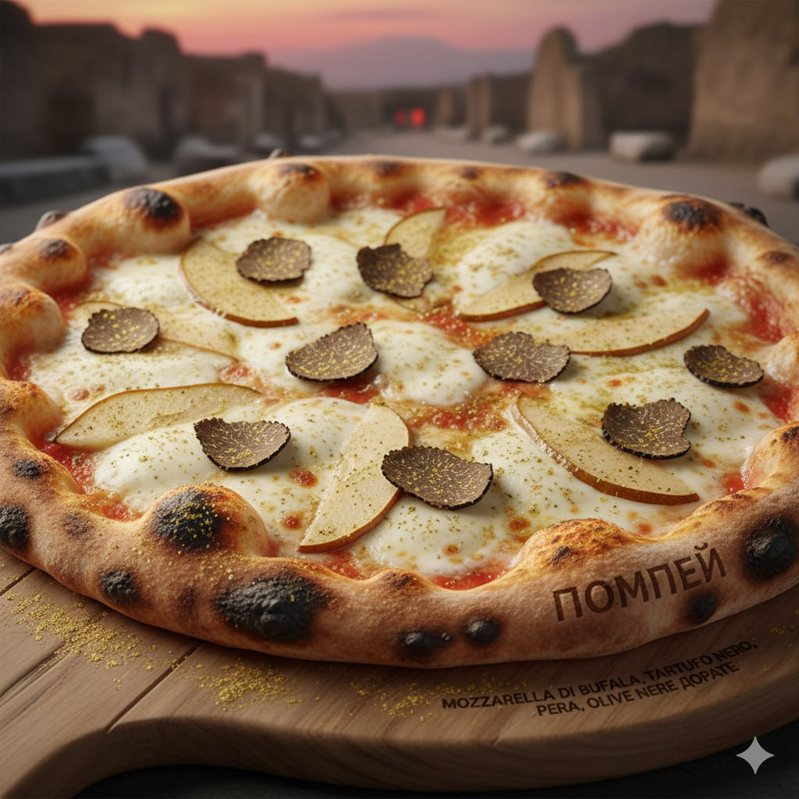
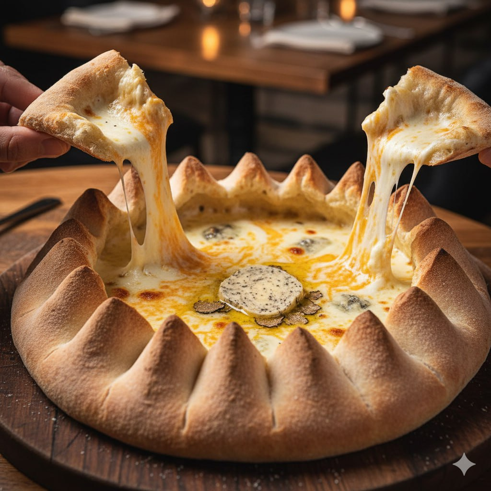
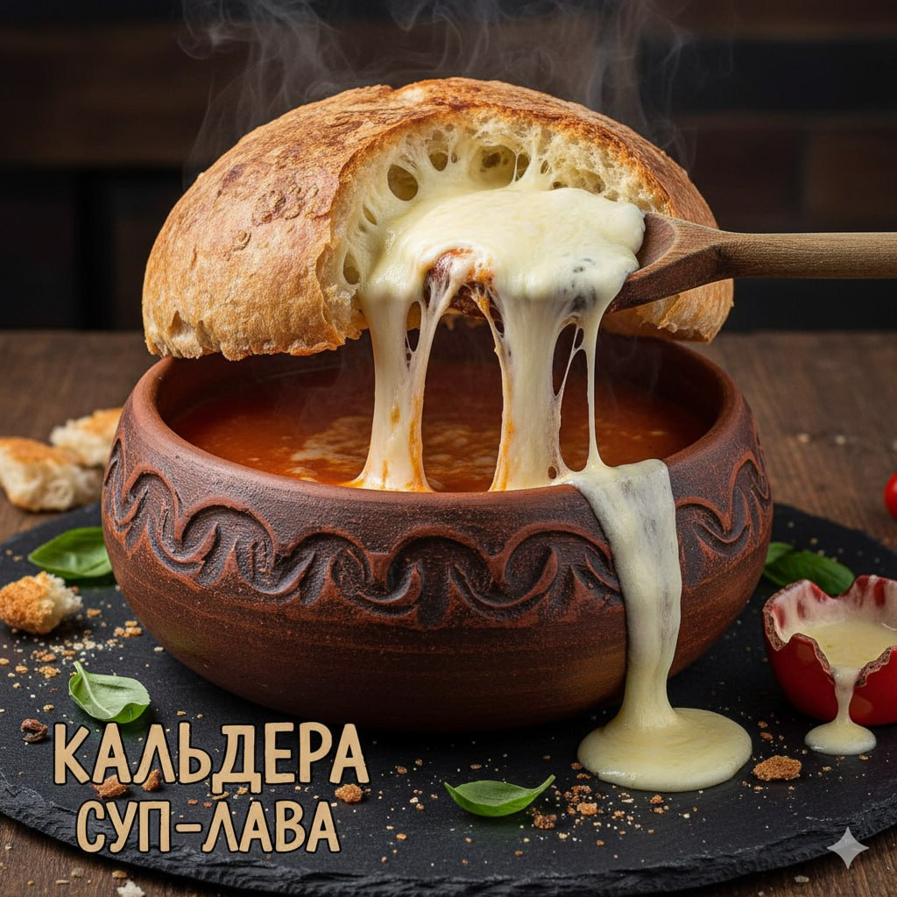

Классическая пицца «Маргарита», но с использованием томатного соуса, настоянного на копченых на вулканическом жаре чили. Создает эффект нарастающей остроты, словно извержение вулкана во рту.

Пицца с моцареллой из буйволиного молока, черными трюфелями и грушей. Сверху посыпается золотой пылью из сушеных черных оливок. Названа в честь древнего города — сочетание роскоши и пепла.

Пицца, рецепт которой знает только шеф-пиццайоло. Состав меняется еженедельно и зависит от вдохновения и лучших сезонных продуктов. Каждая такая пицца сопровождается «геологической картой» — описанием ингредиентов.

Это не просто пицца, а настоящее шоу. Классическое тесто формируется в виде чаши-кратера, края которой высоко подняты. Внутри — начинка из трёх видов сыра (рикотта, горгонзола и моцарелла), запеченных до состояния расплавленной лавы. Подается с кусочком сливочного масла, настоянного на трюфеле, который тает в центре «кратера». Есть нужно, отламывая края теста и макая их в сырную массу.

Густой томатный суп, подаваемный в жаропрочной керамической миске, которая символизирует кальдеру (огромный кратер). Суп накрывают гигантским хрустящим хлебным «колпаком», начиненным расплавленной моцареллой. Чтобы добраться до супа, нужно пробить «крышу», и сыр стекает внутрь, как лава.

Воздушный мусс из белого шоколада и маскарпоне, покрытый тёмным шоколадным ганашем и посыпанный хрустящими шариками из черного кунжута и какао-порошка, имитирующими пепел. Подается на тёмной тарелке, украшенной клубничным кули (символ огненной лавы).